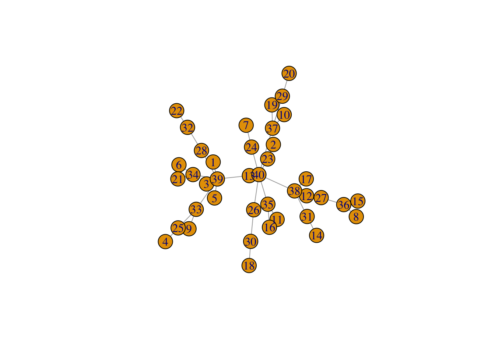
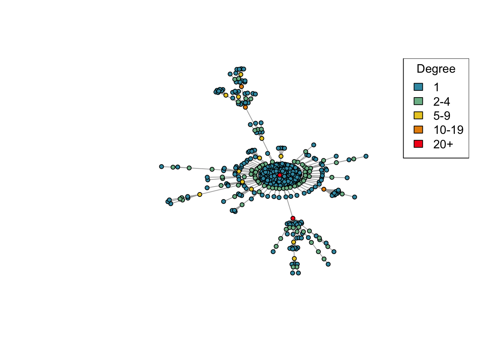
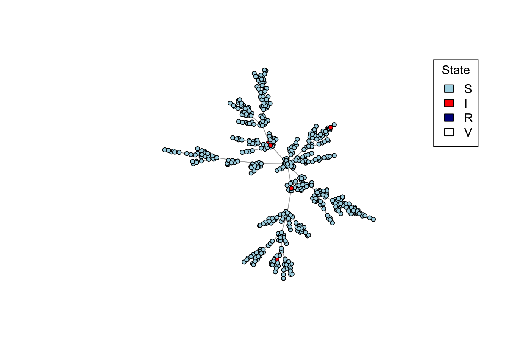
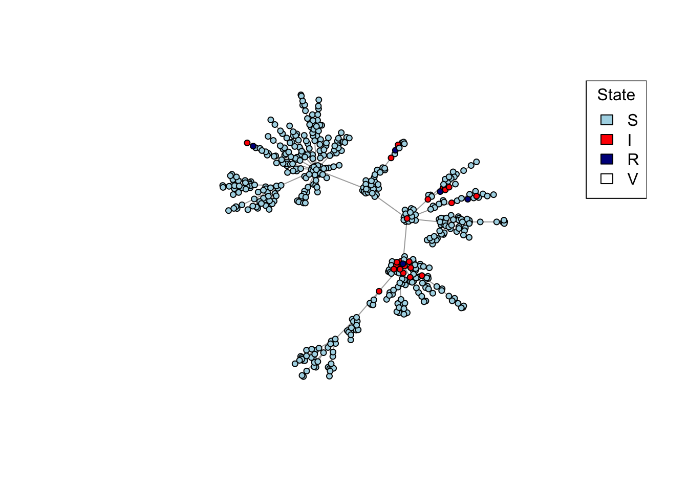
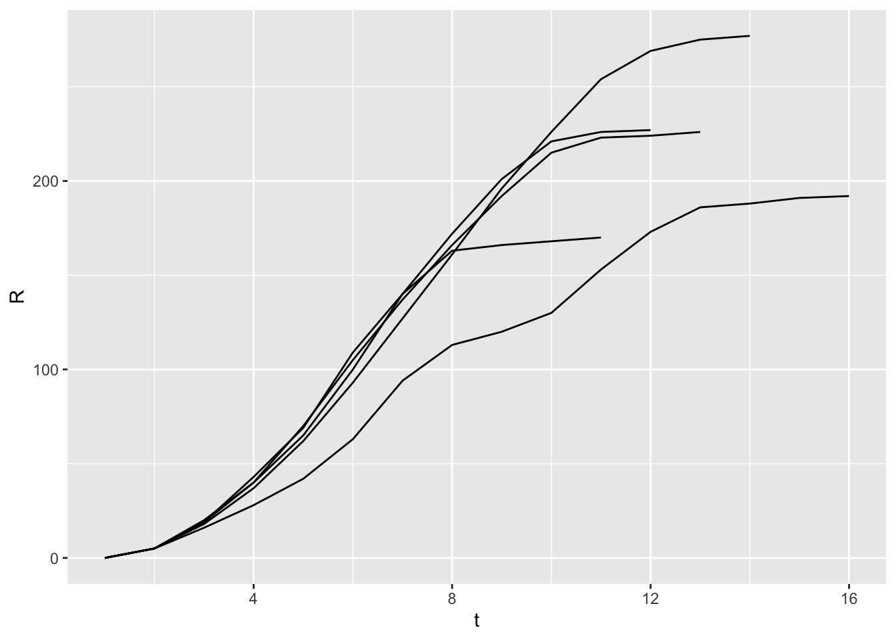

In this practical, we will implement a network model of mpox transmission.
Practical 1. Introduction to the igraph package
The R package igraph allows you to create, manipulate, and plot graphs. This first practical will show you the basics of igraph and will demonstrate how we might use graphs to represent infectious disease transmission.
Building and plotting graphs
igraph has a number of functions that are designed to create graphs according to certain rules or designs. One of the simplest graphs, conceptually, is the “complete” or “full” graph, in which each vertex is connected to every other vertex. This is made using the igraph function make_full_graph(n), where n is the number of nodes or vertices.
Let’s make a complete graph with 4 nodes. Run the following code:
library(igraph) # For network functionalitylibrary(data.table)library(ggplot2)# Complete graph with 4 nodesgr <-make_full_graph(4)print(gr)
IGRAPH f1d63f5 U--- 4 6 -- Full graph
+ attr: name (g/c), loops (g/l)
+ edges from f1d63f5:
[1] 1--2 1--3 1--4 2--3 2--4 3--4
Take a look at the output of print(gr).
The most important parts here are probably “4 6” at the top (this means the graph has 4 vertices and 6 edges) and the list of edges at the bottom, showing which nodes are connected to which other nodes.
This information is easier to take in if we plot the graph. Run the following:
plot(gr)
Run the plot(gr) line multiple times. The plot changes. Does the graph change?
igraph has lots of different functions for making different kinds of graphs. make_full_graph is one that we’ve already seen, but there are several others.
Here are some examples, all of which create graphs with a different number of nodes. Try plotting each of them and think about the implications of each network for infectious disease transmission, if each node represents a person and each edge means that the two people connected by the edge can potentially infect each other.
Remember, to read more about a specific function, you can look up the help on that function, e.g.
?make_lattice
Any igraph function that starts with make_ is deterministic, i.e. gives you the same graph every time you run it. There are also igraph functions that give you random graphs, i.e. the function uses some random model to build a new graph each time. These functions start with sample_.
One of the simplest random graphs is called a Bernoulli random graph, or an Erdős-Rényi \(G(n,p)\) graph. This just means that there are n nodes in the graph, and every possible pair of nodes is connected with probability p. This graph is created using the function sample_gnp(n, p).
Let’s start by looking again at our complete graph with 16 vertices:
Above, layout = layout_in_circle puts all the nodes evenly around a circle, so that the position of the nodes is the same each time the graph is plotted. This will make the next graph easier to compare.
Now, let’s make a \(G(n,p)\) graph with \(p = 0.2\) and plot that.
Compare it to the previous plot, and run these two lines multiple times to see what happens.
Try changing the number of nodes and the connection probability and see what happens. If you set \(p\) to a lower value, like 0.1, you are more likely to see individual nodes with no connections to other nodes, or several separated parts of the overall graph - try it.
There are lots of other well-known models for generating random graphs. Some of the most famous are the “small-world” model by Watts and Strogatz, where there are initially connections between neighbours, some of which are randomly rewired:
Or the “preferential attachment” model by Barabási and Albert, which is built by adding nodes one at a time, and each time a node is added, it is connected to other nodes, where the connection is more likely to be made to a node that already has more connections (a “rich get richer” dynamic).
plot(sample_pa(16, directed =FALSE))
One reason these two models are so well known is that they were both introduced in high-impact papers claiming that the underlying models were widely applicable to a variety of real-world networks. Worth reading if you are interested:
Some simple calculations: vcount() or ecount() give the number of vertices or edges in the graph; degree() gives the number of neighbours of each vertex. Try running each of these.
vcount(network) ecount(network) degree(network)
With igraph, you can get and set attributes of the entire graph using the $ operator. For example, let’s set the graph’s layout to a grid:
Notice that this has done two things. First, it added the attribute layout (g/n) to the graph and this is now shown as being present when you run print(network). Second, it has permanently fixed the layout of the graph so that it always plots the same way.
You can also modify properties of the vertices and of the edges, using V() and E() respectively. Let’s change the color of the vertices and edges:
Among the attributes here, you can now see layout (g/n), color (v/c), and color (e/c). Here, the ‘g’ in (g/n) means the property is attached to the entire graph, while the ‘v’ and ‘e’ means the respective properties are attached to vertices and edges respectively. See ?print.igraph for more explanation of the codes.
Finally, we can also use brackets [] to change properties of only certain vertices/edges. Here are some examples:
The .nei() function, when used inside V(some_network)[ ], selects all neighbours of the specified vertices. This is very useful for transmission models on networks, because it is the neighbours of infected vertices that are at risk of getting exposed to the pathogen. Try running the code below and see what it does.
# Pink is contagious:V(network)[.nei(color =="pink")]$color <-"pink"plot(network)
What is the code above doing? What happens if you re-run the two lines above several times?
Some other interesting attributes for vertices include:
label text label for the vertices (set to NA for no labels)
If you have gotten this far and still have time before the session is up, see if you can use what you have learned above to code an SIR model on a network.
Suggestion: If you want to plot the network at each time step to watch it “animate”, you can use Sys.sleep(1.0) to pause for a second between snapshots of the network so that the plots don’t all appear at once.
Practical 2. A network model of mpox transmission
For this practical, we’ll be using igraph and the techniques described above to build a simplified model of MPV (monkeypox virus) transmission in a network of sexual contacts among men who have sex with men (MSM).
Setting up the network
We’ll build up our model by building several “helper” functions that break down our modelling task for us. We start by creating a function that builds a network by preferential attachment (see the citation to Barabási and Albert 1999 above).
In preferential attachment, the graph starts with one node, and then new nodes are added to the network one at a time. Every time a new node is added, it is connected to one randomly-selected node of the existing network, where the node to attach to is selected with probability proportional to the number of connections it already has. In other words, the new node attaches to existing node \(i\) with probability proportional to \(\mathrm{deg}(i)\), where \(\mathrm{deg}(i)\) is the degree of node \(i\). This tends to build up connections at nodes that are already well connected, meaning that in the resulting network, a small number of nodes have many connections while most nodes have only a few. Sexual networks tend to exhibit this property, which is why we’re using preferential attachment for our model.
There are variations to the preferential attachment model – for example, some variants add \(m\) connections to existing nodes instead of 1 each time a node is added, and some variants make the probability of attaching to node \(i\) proportional to \(\mathrm{deg}(i)^d\), with \(d\) some constant.
Let’s begin by making a function create_network() that uses the sample_pa() function of igraph to create a new network; then set a property “state” for each node to “S” for susceptible; and then give 5 random individuals the state “I” for infectious.
library(igraph)library(data.table)# Set up a transmission network of n nodes by preferential attachment with # affinity proportional to degree^m.create_network <-function(n, d, layout = layout_nicely){# Create the network by preferential attachment, passing on the parameters # n and power network <-sample_pa(n, d, directed =FALSE)# Add the "state" attribute to the vertices of the network, which can be# "S", "I", "R", or "V". # Start out everyone as susceptible ...V(network)$state <-"S"# ... except make 5 random individuals infectious.V(network)$state[sample(vcount(network), 5, prob =degree(network))] <-"I"# Reorder vertices so they go in order from least to most connected. This# is to help with degree-targeted vaccination, and also to make the # most connected vertices plot on top so they don't get hidden. network <-permute(network, rank(degree(network), ties.method ="first"))# Set the network layout so it doesn't change every time it's plotted. network$layout <-layout(network)return (network)}
Now, let’s try using the function and looking at the results.
net <-create_network(n =40, d =1)plot(net)

Try varying the d parameter for create_network between 0 and 2. What changes about the network?
The above plot looks a little cluttered, so we’ll create a function plot_degree that tidies up the plot a little so that we can focus on the important features, and colours the nodes according to how well connected they are.
# Plot a network, highlighting the degree of each node by different colours.plot_degree <-function(network){# Set up palette colors <-hcl.colors(5, "Zissou 1")# Classify nodes by degree deg <-cut(degree(network), breaks =c(1, 2, 5, 10, 20, Inf),labels =c("1", "2-4", "5-9", "10-19", "20+"),include.lowest =TRUE, right =FALSE)# Plot networkplot(network, vertex.color = colors[deg],vertex.label =NA,vertex.size =4)legend("topright", levels(deg), fill = colors, title ="Degree")}
Let’s try using plot_degree:
net <-create_network(500, 1.5)plot_degree(net)

This time we’ve created a network with 500 nodes. Try varying the d parameter again and plotting the generated networks. Are the results similar to what you saw before with 40 nodes?
Now let’s create and test a similar function that will plot the state of each node:
# Plot a network, colouring by state (S/I/R/V).plot_state <-function(network){# Set up palette colors <-c(S ="lightblue", I ="red", R ="darkblue", V ="white")# Plot networkplot(network, vertex.color = colors[V(network)$state], vertex.label =NA,vertex.size =4)legend("topright", names(colors), fill = colors, title ="State")}net <-create_network(500, 1)plot_state(net)

Running the model
Now we’ll create a function network_step() that runs a single generation (step) of the model. It will find all the susceptible neighbours of infectious individuals in the network, infect each of them with probability \(p\), and then change the state of all the individuals who were infectious at the beginning of the time step to “R” for recovered.
# Enact one step of the network model: infectious individuals infect # susceptible neighbours with probability p, and recover after one time step.network_step <-function(net, p){# Identify all susceptible neighbours of infectious individuals, # who are "at risk" of infection at_risk <-V(net)[state =="S"&.nei(state =="I")]# Use the transmission probability to select who gets exposed from# among those at risk exposed <- at_risk[runif(length(at_risk)) < p]# All currently infectious individuals will recoverV(net)[state =="I"]$state <-"R"# All exposed individuals become infectiousV(net)[exposed]$state <-"I"return (net)}
Let’s see if this works so far:
net <-create_network(500, 1)net <-network_step(net, p =0.8)plot_state(net)

After creating your network with the first line above, run the last two lines repeatedly to watch the network model evolve.
Finally, let’s create and test a function that will run the model on a given network from time 0 to time t_max with a given secondary attack rate p:
# Run the transmission model on the network with maximum simulation time t_max# and transmission probability p.run_model <-function(net, t_max, p){# Plot network degreeplot_degree(net)Sys.sleep(2.0)# Iterate over each time stepfor (t in0:t_max) {# Plot current stateSys.sleep(0.5)plot_state(net)# Stop early if no infectious individuals are leftif (!any(V(net)$state =="I")) {break; }# Run one step of the network model net <-network_step(net, p) }# Return final outbreak sizereturn (sum(V(net)$state =="R"))}
The code above uses Sys.sleep() to pause for short time between “frames” of the network model animation, so that it doesn’t zip by too quickly to watch. Now let’s try it out:
net <-create_network(500, 1)run_model(net, 100, 0.8)
How does the preferential attachment parameter (create_network parameter d) affect the final outbreak size?
Bonus: Extending the model
If you still have time left, try adding vaccination to the model, then extending the model to summarize the results from multiple runs.
Vaccination
For vaccination, fill in this function:
vaccinate_network <-function(network, v, k){ # ... do vaccination here ... return (network)}
so that it sets a randomly-selected fraction v of nodes in the network to state “V”? (Don’t worry about the parameter k for now.)
Once you’ve done that, and tested that it works by watching the results of run_model(), let’s move on to something trickier.
Usually, as a first step, we might model each person’s propensity for getting vaccinated as being independent of their other characteristics – that is, we make the assumption that people get vaccinated completely at random.
But what if only the lowest-risk get people get vaccinated, because people at higher risk have less access to vaccines? Or what if we design our vaccination programme to target specifically the people who are at higher risk?
Try extending the function vaccinate_network() that you have written to use the parameter k to control the association between risk and vaccination.
For example, when k = 0 we can vaccinate people at random; when k = 1 we vaccinate only those people with the highest number of connections in the network; and when k = -1 we vaccinate only those people with the lowest number of connections in the network.
Recall that our create_network() function already makes sure that the vertices are sorted in order from lowest degree to highest degree, so that, for example, V(network)[1:10] would select the 10 least connected individuals and V(network)[(vcount(network) - 9):vcount(network)] would select the 10 most connected individuals.
The version of vaccinate_network() in the solutions for this practical goes a step further by allowing intermediate values for k between -1 and +1, with intermediate values moving from the extreme of vaccinating only the least-connected (\(k = -1\)) to vaccinating at random (\(k = 0\)) to vaccinating only the most-connected (\(k = 1\)). There are lots of different ways of doing this, but the way the practical solution does it is by first vaccinating the \(nv\) most connected individuals if k is positive, or the \(nv\) least connected individuals if \(k\) is negative, then randomly shuffling the vaccination status of a fraction \(1 - |k|\) of all individuals. Check the solutions if you like, but you can also try implementing this (or another way) yourself.
Summarize results from multiple runs
Since the results of a network model can vary a lot from run to run, it is helpful to be able to easily run the model many times for the same starting conditions and summarize the results. Here is one way you might extend the run_model() function to generate epidemic curves for each model run, and create a new function run_scenario() to run the model multiple times with the same parameters:
# Run the transmission model on the network with maximum simulation time t_max# and transmission probability p; plot the network as the model is running if# animate = TRUE.run_model <-function(net, t_max, p, animate =FALSE){# Plot network degreeif (animate) {plot_degree(net)Sys.sleep(2.0) }# Set up results dt <-list()# Iterate over each time stepfor (t in0:t_max) {# Store results dt[[length(dt) +1]] <-data.table(S =sum(V(net)$state =="S"),I =sum(V(net)$state =="I"),R =sum(V(net)$state =="R"),V =sum(V(net)$state =="V") )# Plot current stateif (animate) {Sys.sleep(0.5)plot_state(net) }# Stop early if no infectious individuals are leftif (!any(V(net)$state =="I")) {break; }# Run one step of the network model net <-network_step(net, p) }# Return the epi curve, including empirical calculation of Rt results <-rbindlist(dt, idcol ="t") results$Rt <- results$I /shift(results$I, 1) # new infections per new infection last time stepreturn (results)}# Run the model nsim times with parameters in params (n, d, v, k, t_max, p),# showing the animated network the first nanim times, and returning a data.table# with the results of each simulation.run_scenario <-function(params, nsim, nanim =1){ results <-list()for (sim in1:nsim) { net <-create_network(params$n, params$power) net <-vaccinate_network(net, params$v, params$k) results[[sim]] <-run_model(net, params$t_max, params$p, animate = sim <= nanim)cat(".") }cat("\n"); results <-rbindlist(results, idcol ="run")return (results)}params <-list(n =500,d =0,p =0.8,v =0.3,k =0,t_max =100)x <-run_scenario(params, nsim =5, nanim =0)
.....
ggplot(x) +geom_line(aes(x = t, y = R, group = run))

How does the vaccine-risk association parameter k affect the final size of the epidemic when averaged over 50 different model runs?